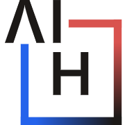
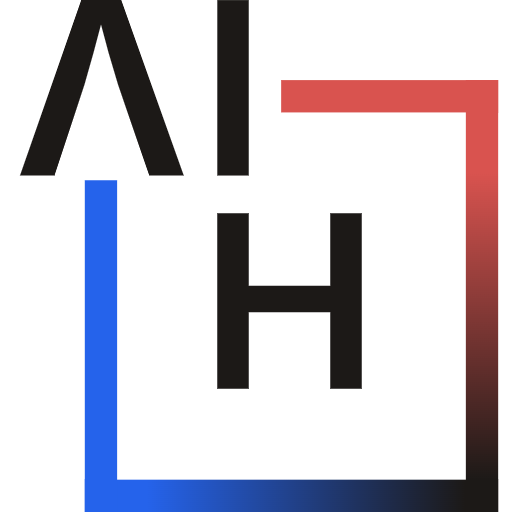

Favicon Test
↑ Look at the browser tab. SVG-rasterized favicon with auto dark-mode swap based on your OS theme.
Browser tab simulator
The toggle above changes the page theme — and the simulated tab below swaps to match. (The actual browser tab favicon at the very top of your window follows your OS theme via media="(prefers-color-scheme: dark)", not this page toggle.)
Native pixel renders
Each PNG at exact pixel size — no scaling.
low-DPI tab
HiDPI tab
Windows taskbar

iOS apple-touch

PWA, shown @256
Pixel-level inspection (zoomed, pixelated)
Each tiny PNG zoomed in so you can see exactly which pixels carry which color.
Color vs white side-by-side
The dark-mode favicon variant is pure white-on-transparent. Here's how each variant looks on the surface it's designed for:
In your site's HTML <head>, ship two sets of favicon links — the second set is gated on the dark-mode media query and the browser swaps automatically when the user's OS theme changes:
<!-- light (default) -->
<link rel="icon" href="favicon.ico" sizes="any">
<link rel="icon" type="image/png" sizes="32x32" href="favicon-32.png">
<!-- dark (swap) -->
<link rel="icon" href="favicon-white.ico" sizes="any"
media="(prefers-color-scheme: dark)">
<link rel="icon" type="image/png" sizes="32x32"
href="favicon-white-32.png" media="(prefers-color-scheme: dark)">
Chrome, Firefox, and Safari all honor this. The favicon updates in real-time when the user toggles their OS theme.
- All favicons are SVG-rasterized from a tight viewBox source (`_source.svg` for color, `_source-white.svg` for white) via headless Chrome.
- Hard-reload (
Ctrl+Shift+R/Cmd+Shift+R) if the browser tab favicon looks stale — browsers cache aggressively. - To test the dark-mode swap on your OS: switch your OS theme (Windows: Settings → Personalization → Colors / macOS: System Settings → Appearance) and watch the browser tab favicon flip.